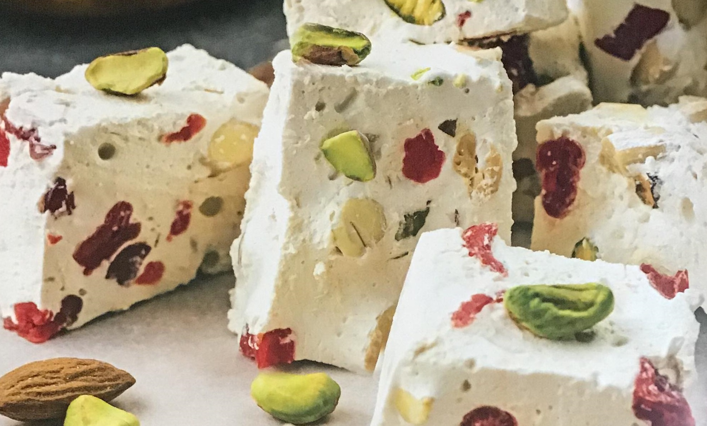

Головна
Холодні та гарячі закуски
Холодні та гарячі супи
Салати та овочеві страви
М'ясні страви
Десерти
ДЕСЕРТИ
Нуга
 Інгредієнти:
В'ялена вишня - 200 г
Фісташки - 200 г
Мигдаль - 200 г
Яйця - 2 шт.
Цукор - 400 г
Мед - 140 г
Оливкова олія - 1 ст. л.
Вода - 50 мл
Сіль - дрібка
Приготування:
Відео-рецепт